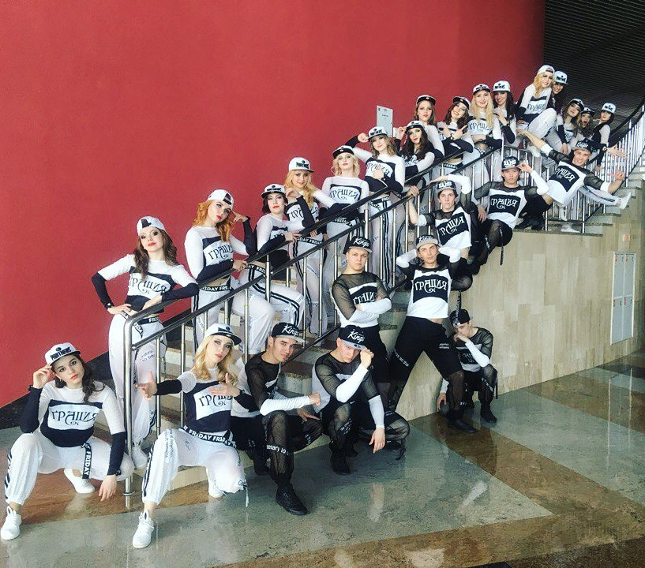
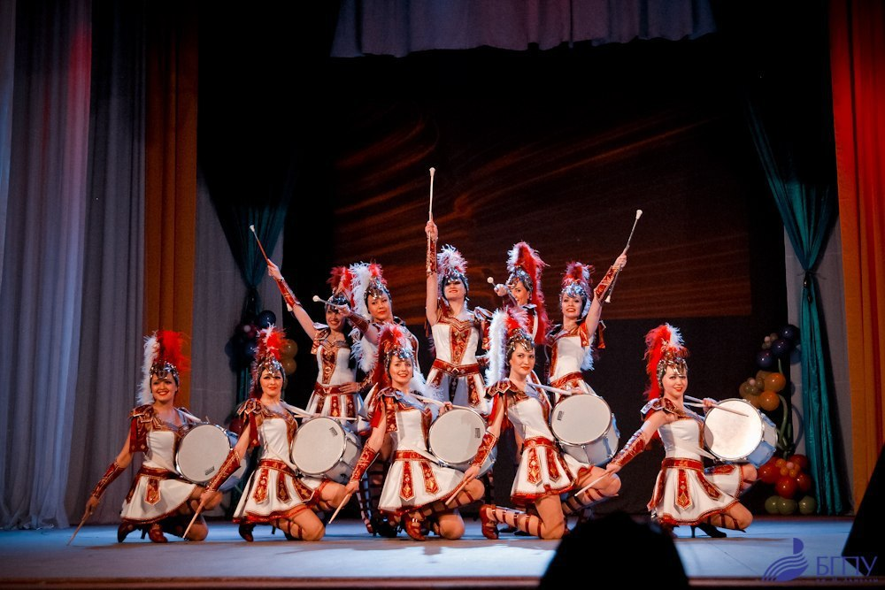
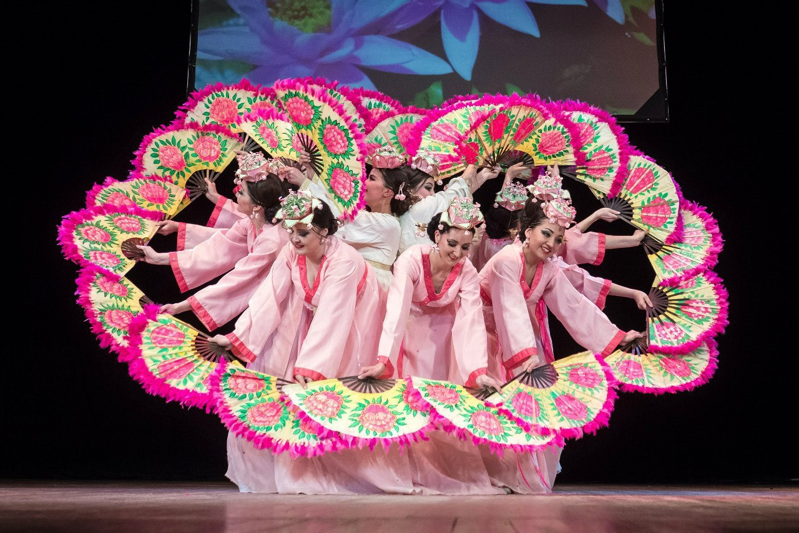
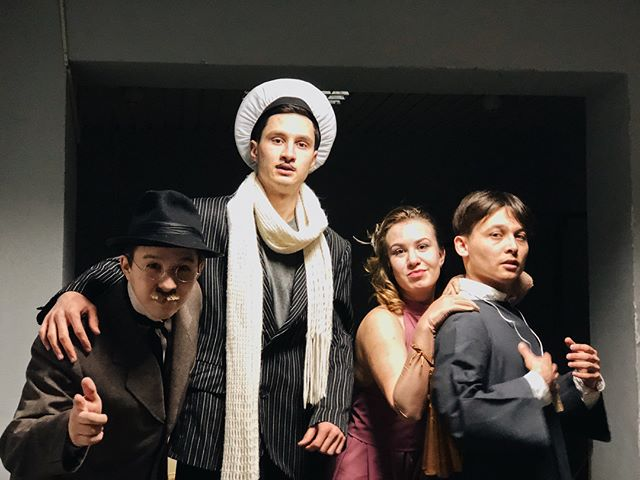

Ансамбль начал свою бурную, творческую деятельность с 1998 года. Утонченный стиль коллектива, основанный на элементах классического танца, выразительность и чувственность композиций не раз отмечались высокими наградами престижных конкурсов.
Всероссийский фестиваль современного танца в г. Екатеринбурге;
Всероссийский фестиваль «Студенческая весна» в г. Ульяновске, специальный приз жюри «За высокое исполнительное мастерство»;
Межрегиональный фестиваль современной и эстрадной хореографии в г. Уфе «Ветер перемен»;
Международный фестиваль молодежного творчества в Москве.
Победа в Международaном конкурсе-фестивале «Морская жемчужина» в славном городе Одесса,
Гран-при Межрегионального фестиваля эстрадной песни и танца «Крещенские морозы»,
ГРАН-ПРИ на Международном фестивале-конкурсе -"Адмиралтейская звезда".
А так же НАСЭТ «Грация» уже более 19 лет является Лауреатом фестиваля «Студенческая весна», подтверждая звание Лучшего эстрадного коллектива среди всех ВУЗов республики Башкортостан.

Группа барабанщиц и мажореток «ДЕРЖАВА» создана при БГПУ им. М. Акмуллы 12 февраля 2008 года. За несколько лет своей деятельности коллектив стал украшением праздничных республиканских и городских мероприятий, он неизменно возглавляет торжественные шествия – будь то День города, 9 мая или встреча Олимпийского огня. Группа барабанщиц и мажореток – частый гость на открытии городских выставок, торжественных концертов, спортивных соревнований, презентаций.
Коллектив работает в трёх направлениях: парадные мажоретки, спортивные мажоретки и барабанщицы. Программа занятий включает приёмы строевой подготовки, хореографию, занятия на музыкальных инструментах (барабан), работу с предметами (батоны, флаги, пои).
Группа барабанщиц и мажореток «ДЕРЖАВА» – один из самых известных подобных коллективов в Башкортостане, чей профессионализм подтвержден званием лауреата в Международных конкурсах и Кубках России.
• Международный фестиваль-конкурс «Северная Венеция», г. Санкт-Петербург, 2012г., лауреаты I степени в номинации «Мажоретки».
• Республиканский фестиваль художественного творчества студентов РБ «Студенческая весна - 2012», г. Уфа, лауреаты I степени в номинации «Мажоретки».
• IV Кубок России среди мажореток и барабанщиц, г. Талдом Московской области, 2012г., диплом II степени в номинации: «Шоу на подиуме. Батон» и диплом III степени в номинации: «Шоу на подиуме. Барабаны», а так же почетный приз Главы городского поселения Талдом.
• Республиканский фестиваль художественного творчества студентов РБ «Студенческая весна - 2013», г. Уфа, лауреаты I степени в номинации «Мажоретки».
• I Кубок Украины среди мажореток и барабанщиц, г. Одесса, 2013г., лауреаты I степени в номинации: «Барабанщицы» и лауреаты II степени в номинации: «Мажоретки». Республиканский фестиваль художественного творчества "Студенческие звезды 2014", лауреат I степени в номинации "Мажоретки".
• I место в чемпионате Европы (IMA)/мира среди мажореток (MWF), в номинации "Барабанщицы. Сеньорки", г. Пореч, Хорватия, август 2014
• Чемпионат ОРТО по современным танцевальным направлениям 2015. 1 место в номинации "Мажоретки"
• 25. 10. 2015 Получение звания народного коллектива
• Участие в фестивале "Спасская Башня", август 2016
Группа барабанщиц и мажореток «ДЕРЖАВА» – один из самых известных подобных коллективов в Башкортостане, чей профессионализм подтвержден званием лауреата в Международных конкурсах и Кубках России.
• Международный фестиваль-конкурс «Северная Венеция», г. Санкт-Петербург, 2012г., лауреаты I степени в номинации «Мажоретки».
• Республиканский фестиваль художественного творчества студентов РБ «Студенческая весна - 2012», г. Уфа, лауреаты I степени в номинации «Мажоретки».
• IV Кубок России среди мажореток и барабанщиц, г. Талдом Московской области, 2012г., диплом II степени в номинации: «Шоу на подиуме. Батон» и диплом III степени в номинации: «Шоу на подиуме. Барабаны», а так же почетный приз Главы городского поселения Талдом.
• Республиканский фестиваль художественного творчества студентов РБ «Студенческая весна - 2013», г. Уфа, лауреаты I степени в номинации «Мажоретки».
• I Кубок Украины среди мажореток и барабанщиц, г. Одесса, 2013г., лауреаты I степени в номинации: «Барабанщицы» и лауреаты II степени в номинации: «Мажоретки». Республиканский фестиваль художественного творчества "Студенческие звезды 2014", лауреат I степени в номинации "Мажоретки".
• I место в чемпионате Европы (IMA)/мира среди мажореток (MWF), в номинации "Барабанщицы. Сеньорки", г. Пореч, Хорватия, август 2014
• Чемпионат ОРТО по современным танцевальным направлениям 2015. 1 место в номинации "Мажоретки"
• 25. 10. 2015 Получение звания народного коллектива
• Участие в фестивале "Спасская Башня", август 2016

Руководитель: Ольга Андреева

Театральная студия "A parte" – отличная возможность не только развить креативный потенциал, но и научиться уверенно держаться перед аудиторией, улучшить технику речи, улучшить пластические возможности своего тела.
Вы сможете чувствовать себя свободно в обществе, вступать в успешные коммуникации, освоите навыки самопрезентации, и все это благодаря нашей театральной студии!